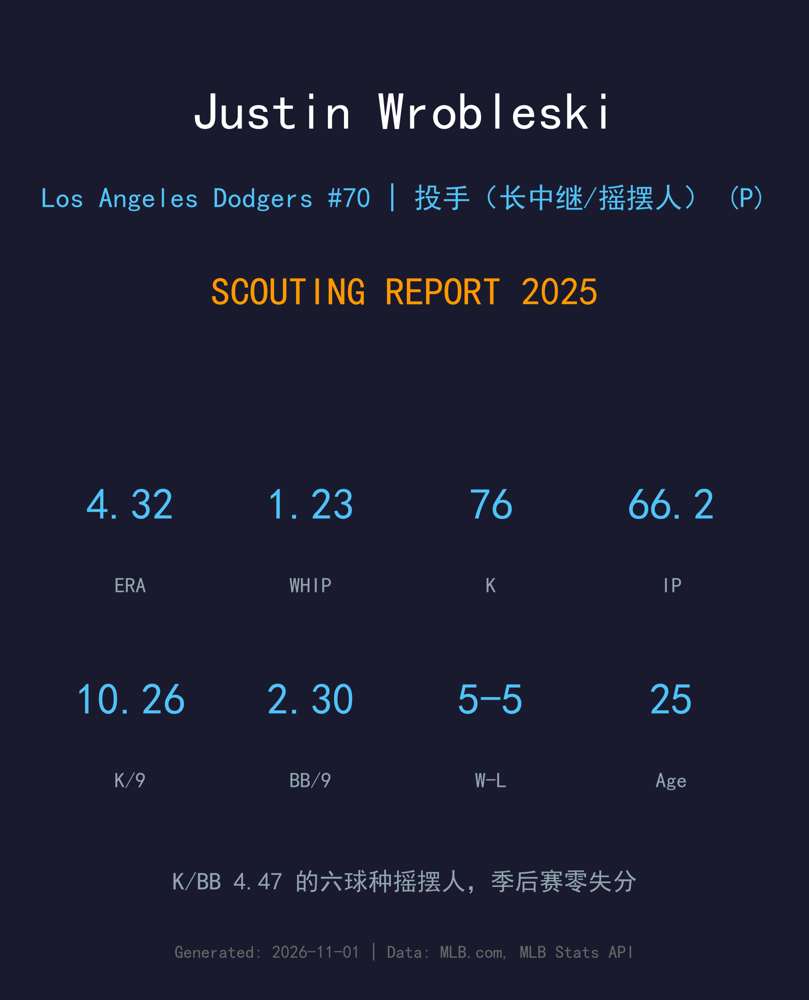
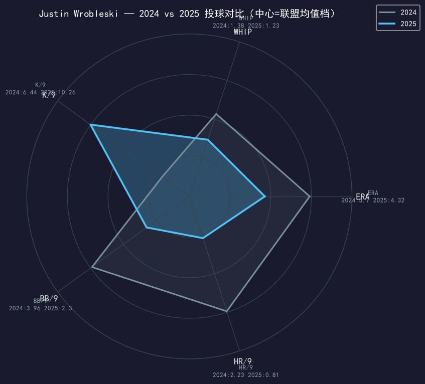
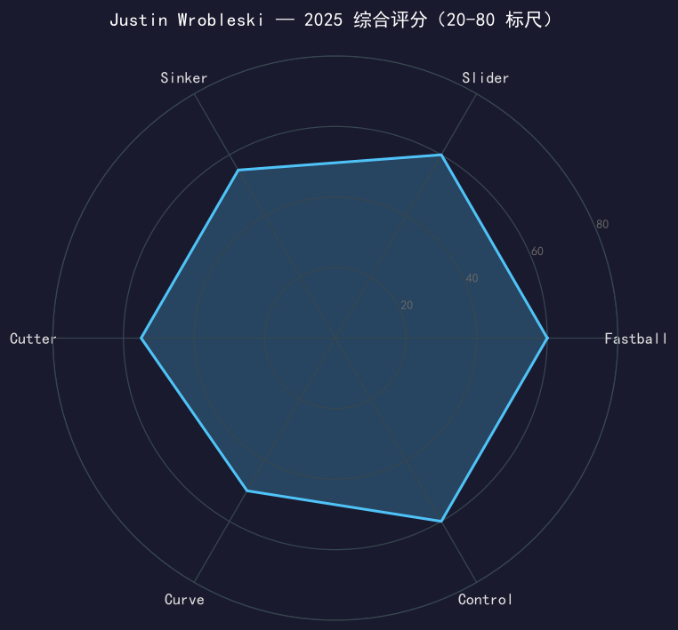

Los Angeles Dodgers #70 | 投手（长中继/摇摆人）| 左投 | K/BB 4.47 的六球种摇摆人，季后赛零失分

Justin Wrobleski 的 2025 年是一份「教科书式二年级飞跃」：从新人年的 5.70 自责分率到 4.32，从 K/BB 1.63 到 4.47 全队第一——这个左投摇摆人在长中继与先发之间无缝切换，24 场出赛（2 场先发）吃下 66.2 局，成了道奇牛棚最被低估的稳定器。
他的武器库深到奢侈：六颗球种全部实战可用，96 mph 速球打底，滑球、伸卡、卡特、曲球、变速层层递进。BB/9 2.30 配上 K/9 10.26，这份三振保送比是顶级后援的数据形状。
季后赛是压舱石的加冕礼：8 次登板、5 局、零失分、6 次三振 0 保送。当老将们轮流燃烧时，这个 25 岁的左投把每一次登板都投成了无安打。2026 年，轮值还是牛棚？选择权在教练组手里，而他的答案显然是「都可以」。
7 月 7 日登上大联盟，先发与救援双重任务起步——8 场出赛 6 场先发，在颠簸中完成了新人年原始积累。
K/BB 从 1.63 跃升至 4.47，三振率从 6.44 涨到 10.26，HR/9 从 2.23 压到 0.81——三项核心指标全部质变，66.2 局是道奇最可靠的摇摆人产出。
夺冠之路 8 次登板：5 局、0 自责分、6 三振、0 保送、1 次中继成功——在最亮的舞台投出了最稳的内容。

| 赛季 | G | GS | W-L | ERA | WHIP | IP | SO | BB | K/BB |
|---|---|---|---|---|---|---|---|---|---|
| 2024（新人年） | 8 | 6 | 1-2 | 5.70 | 1.38 | 36.1 | 26 | 16 | 1.63 |
| 2025（飞跃年） | 24 | 2 | 5-5 | 4.32 | 1.23 | 66.2 | 76 | 17 | 4.47 |
新人年的 Wrobleski 还在摸索自己的武器库：三振率 6.44、保送 3.96、被轰 9 支——典型的「球很多但不知道用哪颗」的新人曲线。2025 年的他完成了从「展示六颗球」到「用六颗球解决打者」的跨越：三振率 +60%、保送近乎减半、全垒打砍掉三分之二。这不是微调，是整套投球哲学的升级。
2025 赛季真实配球数据（MLB Stats API pitchArsenal）——六球种深度联盟罕见：
配球基石，96 mph 均速配左投出手角度，直球质量已是联盟上游。
两好球后的第一追杀选择，横向位移大，对右打者同样有效。
诱导滚地与双杀的内角球路，是他能「吃局数」的效率来源。
破坏棒次的中间选项，填补速球与滑球之间的速度带与位移带。
改变视线高度的变速节奏球，偶尔作为配球惊喜出现。
使用率最低的第六球种，对右打者的「保留节目」。
三振保送比是衡量投手「统治力」最干净的指标——4.47 意味着他每送出不到半个保送就能抓到一次三振。在 2025 年的道奇全队范围内，这个数字无人出其右，放在全联盟后援投手中也是前 10% 的形状。新人年 1.63 到二年级 4.47，这种幅度的跃迁在投手发展史上都属罕见。
2025 年他 2 次先发 + 22 次救援、单局用球经济、面对左右打者都有对应武器。在轮值伤病不断的赛季里，这种「哪里缺人顶哪里」的属性是教练组的战略资产——而且与 Casparius 式的工具人不同，他的三振上限明显更高。
8 次登板 0 自责分、0 保送、被敲 4 支安打——在比分接近、打者质量最高的季后赛，他把 BB/9 2.30 的纪律性原样复制。教练组给他的信任从常规赛「第 6-7 局」升级到了季后赛「第 7-8 局」，这种季后赛杠杆的提升比任何常规赛数据都值钱。

六球种摇摆人，轮值与牛棚双通道
B+ 级 / 牛棚新星（轮值候选）
道奇 2025 季后赛夺冠之路：外卡 2-0 红人 → NLDS 3-1 费城人 → NLCS 4-0 酿酒人 → 世界大赛 4-3 多伦多蓝鸟。
Wrobleski 8 次登板：5 局、0 自责分、6 次三振、0 次保送、仅 4 支安打、1 次中继成功——季后赛 ERA 0.00。
Justin Wrobleski 站在一个令人羡慕的十字路口：回轮值，他有六球种先发投手的完整结构；留牛棚，他是 K/BB 4.47 的高杠杆左投。无论哪条路，2025 年 11 月的他都已不再是「潜力股」，而是「已经兑现的人」。
理想剧本：春训竞争轮值第五人成功，150+ 局
现实基准：继续摇摆人角色，80-100 局高杠杆产出
上行惊喜：若速球再涨 1 mph，摸到轮值三号位的门槛
Justin Wrobleski 来自伊利诺伊州霍夫曼庄园，2024 年 7 月 7 日登上大联盟。他的新人年不算光鲜——5.70 自责分率、三振保送比 1.63——但道奇教练组看到了数据背后的东西：六颗球的潜质、96 mph 的速球底子、以及左投稀缺的身份。
2025 年，他把潜质全部兑现了。教练组没有把他固定在任何单一角色里，而他用每一次登板回报这份自由：先发能撑、长中继能吃局、短中继能 K。季末盘点，他是全队 K/BB 之王，也是季后赛零失分的隐形功臣。
在道奇这座永不停歇的机器里，Wrobleski 是那颗 newly forged 的齿轮——还没决定装在哪个位置，但已经证明了无论装在哪里都能转动。2026 年，轮到教练组来解这道幸福的难题了。